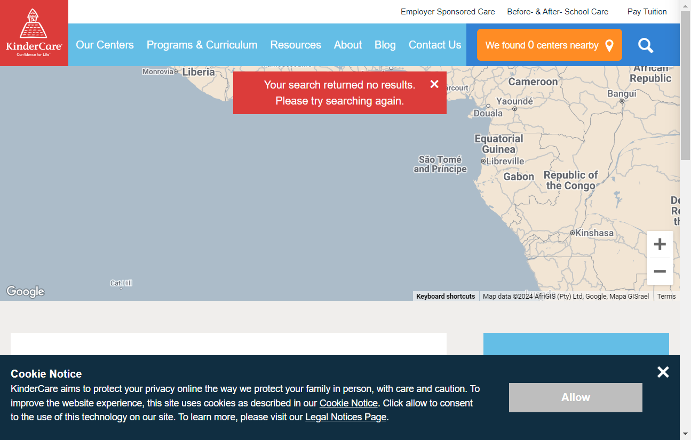
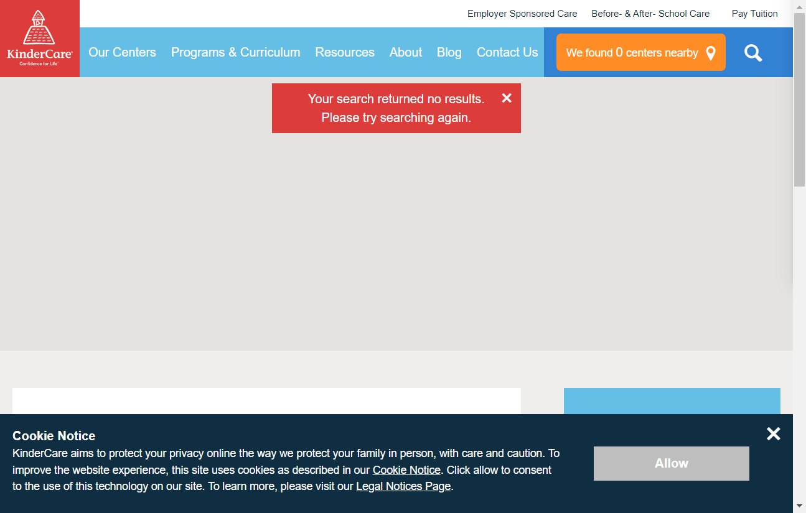
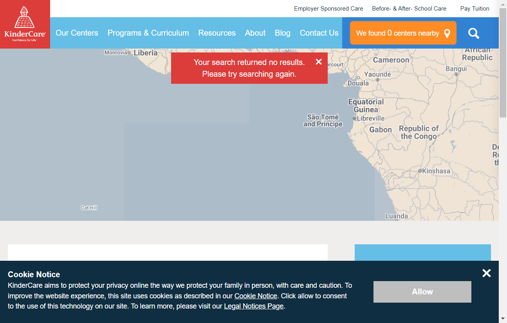

-
Day Care Center Search
3:41:17 p.m. / 00:00:22:664 Fail
Day Care Center Search
02.26.2024 3:41:17 p.m. 02.26.2024 3:41:40 p.m. 00:00:22:664 · #test-id=1As a user on the home page I want to search for day care centers by zipcode So that I can see a list of nearby day care facilitiesFailUser searches for day care centers by zipcode and sees a list of facilitiesFailUser searches for day care centers by zipcode and sees a list of facilitiesGiven the user is on the home pageWhen the user clicks on Find a centerAnd the user enters a valid "" and "radius" into the search field stepDefinitions.Hooks.AddScreenshot(io.cucumber.java.Scenario)imageAnd the user clicks on the search buttonStep skippedThen the user should see a list of day care facilities in that zipcode areaStep skippedFailUser searches for day care centers by zipcode and sees a list of facilitiesGiven the user is on the home pageWhen the user clicks on Find a centerAnd the user enters a valid "" and "radius" into the search field stepDefinitions.Hooks.AddScreenshot(io.cucumber.java.Scenario)imageAnd the user clicks on the search buttonStep skippedThen the user should see a list of day care facilities in that zipcode areaStep skippedFailUser searches for day care centers by zipcode and sees a list of facilitiesGiven the user is on the home pageWhen the user clicks on Find a centerAnd the user enters a valid "" and "radius" into the search field stepDefinitions.Hooks.AddScreenshot(io.cucumber.java.Scenario)imageAnd the user clicks on the search buttonStep skippedThen the user should see a list of day care facilities in that zipcode areaStep skippedFailUser searches for day care centers by zipcode and sees a list of facilitiesGiven the user is on the home pageWhen the user clicks on Find a centerAnd the user enters a valid "" and "radius" into the search field stepDefinitions.Hooks.AddScreenshot(io.cucumber.java.Scenario)imageAnd the user clicks on the search buttonStep skippedThen the user should see a list of day care facilities in that zipcode areaStep skipped
-
io.cucumber.core.exception.CucumberException
4 tests
io.cucumber.core.exception.CucumberException
4 failedStatus Timestamp TestName Fail 15:41:35 p.m. And the user enters a valid " " and "radius" into the search field Day Care Center Search.User searches for day care centers by zipcode and sees a list of facilities.And the user enters a valid "" and "radius" into the search field Fail 15:41:37 p.m. And the user enters a valid " " and "radius" into the search field Day Care Center Search.User searches for day care centers by zipcode and sees a list of facilities.And the user enters a valid "" and "radius" into the search field Fail 15:41:38 p.m. And the user enters a valid " " and "radius" into the search field Day Care Center Search.User searches for day care centers by zipcode and sees a list of facilities.And the user enters a valid "" and "radius" into the search field Fail 15:41:40 p.m. And the user enters a valid " " and "radius" into the search field Day Care Center Search.User searches for day care centers by zipcode and sees a list of facilities.And the user enters a valid "" and "radius" into the search field
-
@tag
5 tests
@tag
5 failedStatus Timestamp TestName Fail 15:41:17 p.m. User searches for day care centers by zipcode and sees a list of facilities Day Care Center Search.User searches for day care centers by zipcode and sees a list of facilitiesFail 15:41:17 p.m. User searches for day care centers by zipcode and sees a list of facilities Day Care Center Search.User searches for day care centers by zipcode and sees a list of facilitiesFail 15:41:17 p.m. User searches for day care centers by zipcode and sees a list of facilities Day Care Center Search.User searches for day care centers by zipcode and sees a list of facilitiesFail 15:41:17 p.m. User searches for day care centers by zipcode and sees a list of facilities Day Care Center Search.User searches for day care centers by zipcode and sees a list of facilitiesFail 15:41:17 p.m. User searches for day care centers by zipcode and sees a list of facilities Day Care Center Search.User searches for day care centers by zipcode and sees a list of facilities -
@tag2
5 tests
@tag2
5 failedStatus Timestamp TestName Fail 15:41:17 p.m. User searches for day care centers by zipcode and sees a list of facilities Day Care Center Search.User searches for day care centers by zipcode and sees a list of facilitiesFail 15:41:17 p.m. User searches for day care centers by zipcode and sees a list of facilities Day Care Center Search.User searches for day care centers by zipcode and sees a list of facilitiesFail 15:41:17 p.m. User searches for day care centers by zipcode and sees a list of facilities Day Care Center Search.User searches for day care centers by zipcode and sees a list of facilitiesFail 15:41:17 p.m. User searches for day care centers by zipcode and sees a list of facilities Day Care Center Search.User searches for day care centers by zipcode and sees a list of facilitiesFail 15:41:17 p.m. User searches for day care centers by zipcode and sees a list of facilities Day Care Center Search.User searches for day care centers by zipcode and sees a list of facilities
Started
Feb. 26, 2024 03:41:16 p.m.
Ended
Feb. 26, 2024 03:41:40 p.m.
Features Passed
0
Features Failed
1
Features
Scenarios
Steps
Timeline
Tags
| Name | Passed | Failed | Skipped | Others | Passed % |
|---|---|---|---|---|---|
| @tag | 0 | 5 | 0 | 0 | 0% |
| @tag2 | 0 | 5 | 0 | 0 | 0% |